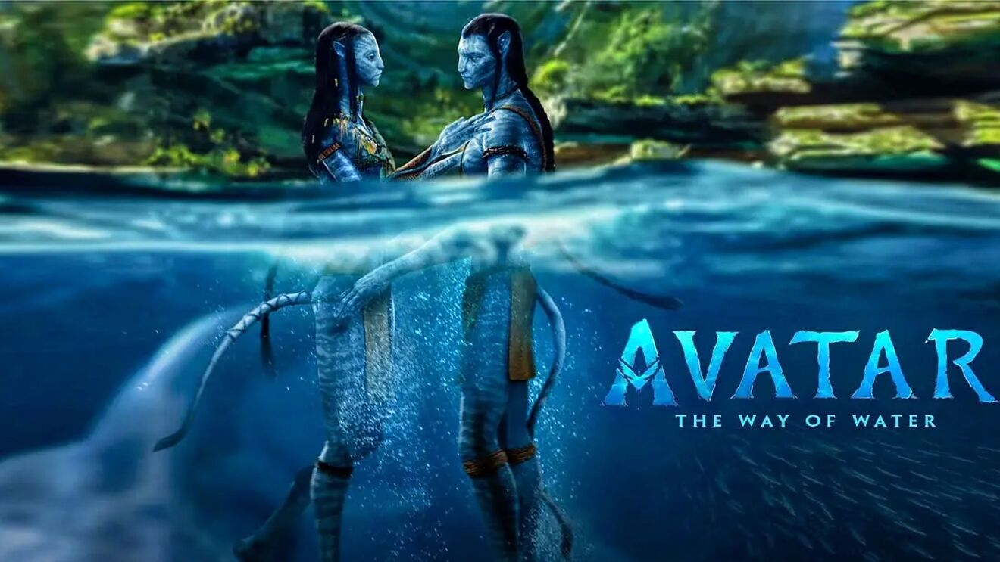
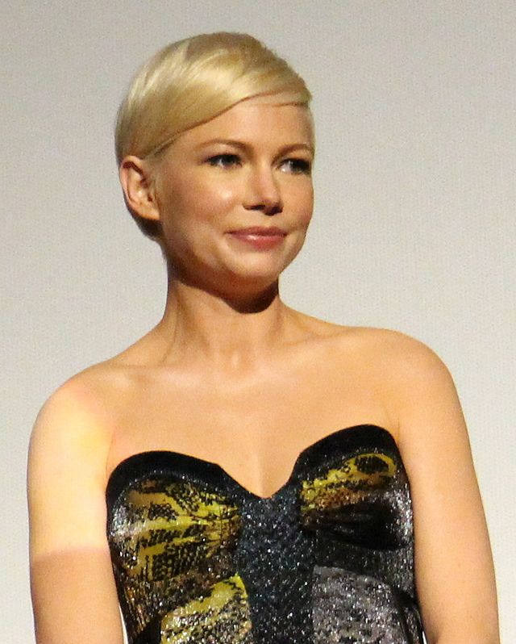

CINEFILIA
INICIO
PREMIOS OSCAR
FORMULARIO
PREMIOS OSCARS
Aquí veremos algunas de las nominaciones
de los
Premios Oscar
de este año 2023
Nominaciones a mejor película
AVATAR THE WAY OF WATER

LA BALLENA
Almas en Pena de Inisherin
Tar
Top Gun: Maverick
Estas son algunas de las películas nominadas, si desea ver el listado completo
vaya aquí
Nominaciones a mejor actor/actriz
Brendan Fraser
Austin Butler
Ana de Armas
Michelle Williams

Estas son algunos de los actores nominados, si desea ver el listado completo
vaya aquí